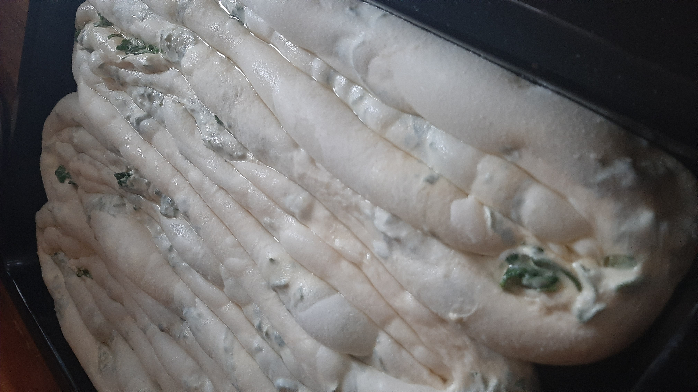

Zeljanica (Marko Krezic)


Schwierigkeit:
Dauer:
Zutaten
Teig
- 750g Mehl
- 2 Esslöfel Öl
- 1 Löfwl Salz
- Circa 300 ml Wasser
Füllung
- 500g Spinat
- 4 Eier
- 250ml Sauerram
- Eine Prise Salz
Zubereitung
Teig und Füllung
- Alle Zutaten in einer Schüssel gemeinsam verrühren bis ein schöner Teig entsteht
- Teig auf die Arbeitsplatte geben und mit Mehl bestreuen und dann auf 4 kleine Teil aufteilen
- Die kleinen Stücke mit einem Teigroller ausrollen auf ungefähr 1cm Dicke. 10 minuten stehenlassen
- Blech mit Öl beschmieren
- Eine Tischdecke auf dem Tisch ausbreiten und den Teig mit den Händen ausdehnen (so dünn wie es geht)
- Den Teig auf die Tischdecke legen und ein wenig Öl draufgeben
- Die Füllung zusammenmichen und in den Teig geben
- Teig zusammenrollen und in den Blech einlegen
- Diesen Vorgang noch 3 weitere male wiederholen und in den Offen geben auf 250 Grad für 20-30 Minuten
- Am Ende noch mit ungefähr 200 ml gekochten Wasser und Salz übergießen
- Anschließend servieren